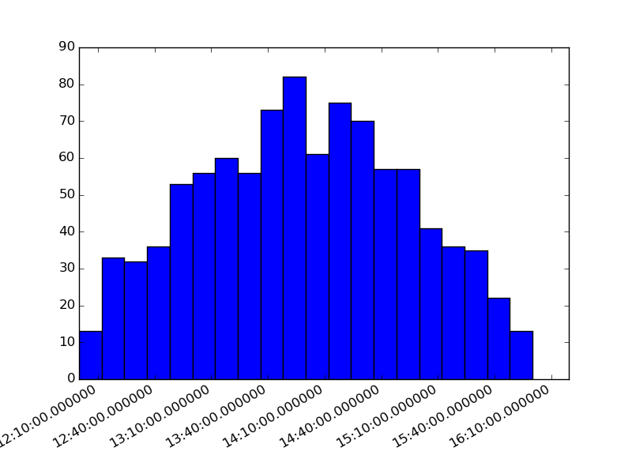

A one dimensional datetime histogram is filled in a loop with random dates. The result is than plotted with the build in plot command.
Python source code: plot_datetime_1D.py
from pyhistogram import Hist
import matplotlib.pyplot as plt
import random
from datetime import datetime
from datetime import timedelta
h = Hist(20, datetime(2014, 1, 1, 12, 0), datetime(2014, 1, 1, 16, 0))
dates = [datetime(2014, 1, 1, 14, 0) + timedelta(hours=random.gauss(0, 1))
for i in range(1000)]
for date in dates:
h.fill(date)
h.plot()
plt.show()
Total running time of the example: 0.24 seconds